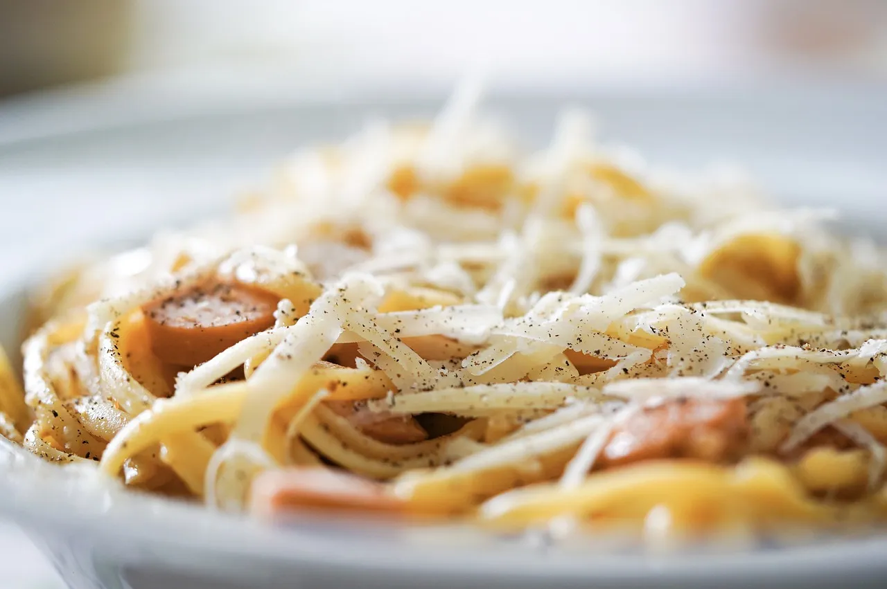
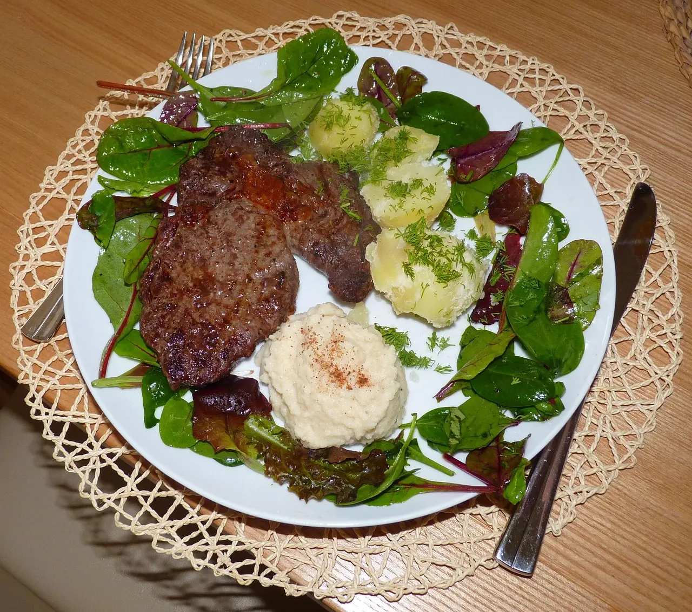
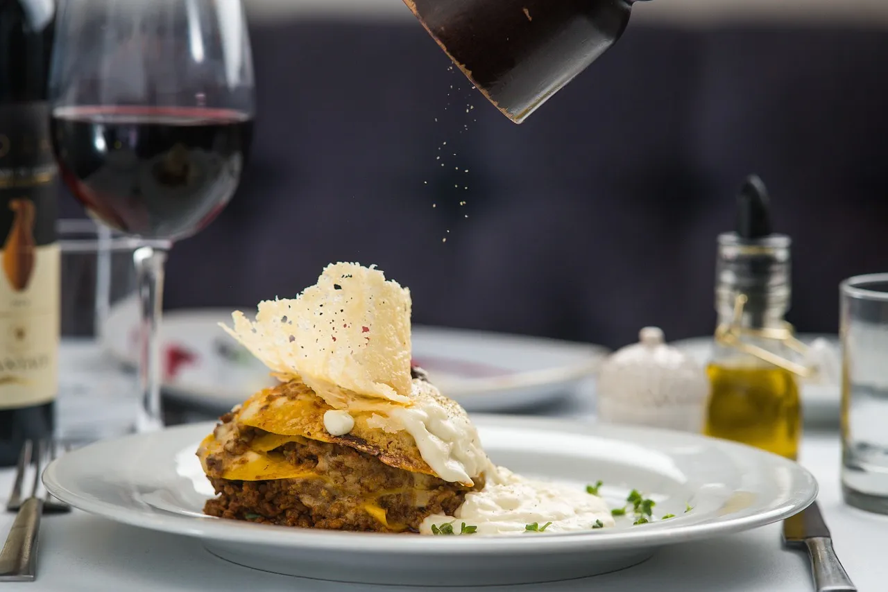

Albany sourdough
Whipped cultured butter and sea salt.
$9
Seasonal and locally minded
Familiar bistro cooking, shaped by Western Australian produce and the season.
To begin
Designed to share, although we will not insist.
Whipped cultured butter and sea salt.
$9Garlic, thyme, goat curd and toasted rye.
$16Charred lemon, parsley and pickled shallot.
$18Smoked mozzarella and sage.
$15From the kitchen
Seasonal produce, careful cooking and generous plates.

$34
Crushed potatoes, garden leaves and pepper jus.

$27
Beef ragu, tomato, parmesan and light bechamel.
$26
Tomato, roasted garlic, herbs and lemon pangrattato.
Lemon butter sauce, broccolini and crushed potatoes.
$28Caramelised onion, rocket, mustard and chips.
$22Sage, parmesan and toasted pepitas.
$25Roast garlic, greens and rosemary jus.
$29Fresh and bright
Useful alongside a main, substantial enough on their own.
Seasonal greens, cucumber, herbs and house vinaigrette.
$14Orange, goat curd, walnuts and bitter leaves.
$17Rosemary salt and roasted garlic aioli.
$12Lemon, almonds and chilli.
$13One last thing
Small comforts, made in our kitchen.
Creme fraiche and cocoa nib.
$14Macadamia shortbread and seasonal berries.
$13Fruit paste, pickles and sourdough crackers.
$19Espresso and house-made vanilla ice cream.
$11By the glass
A short list of Western Australian favourites and alcohol-free options.
Dry, citrus-led and mineral.
$12Blackcurrant, cedar and fine tannin.
$14Grapefruit, rosemary and sparkling water.
$9Lemon, native mint and soda.
$7The menu changes with availability, but a warm welcome remains constant.